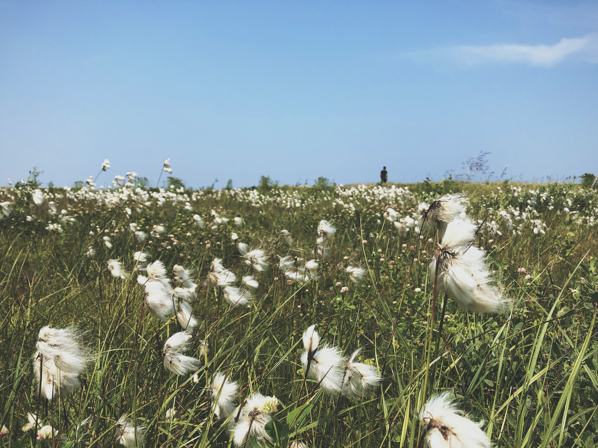

About Cotton
Cotton is a soft, fluffy staple fiber that grows in a protective case, known as a boll, around the seeds of the cotton plant. It is widely used in the textile industry to produce clothing, bedding, and various other products.
Steps to Grow Cotton
- Choose a sunny location with well-draining soil.
- Plant cotton seeds or young cotton plants after the last frost.
- Water the plants regularly, ensuring the soil remains consistently moist.
- Fertilize the cotton plants with a balanced fertilizer during the growing season.
- Monitor for pests and diseases and take appropriate measures for control.
- Harvest cotton bolls when they are mature and ready for picking.
Extra Information
Cotton has been cultivated for thousands of years and has played a significant role in the textile industry. It is a versatile and valuable crop that contributes to the production of a wide range of textiles, from clothing to home furnishings.